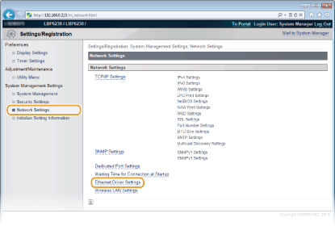
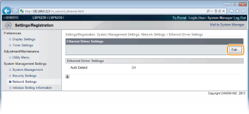
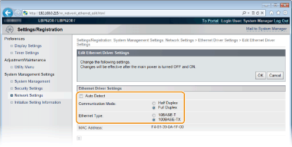

Configuring Ethernet Settings
Ethernet is a standard for communicating data in a LAN. You can set the communication mode (Half Duplex/Full Duplex) and the Ethernet type (10BASE-T/100BASE-TX). The factory default setting, the communication mode and type of Ethernet are automatically detected. Usually, the Ethernet settings can be used as is, but use the following procedure to manually specify the settings as necessary.
1
Start the Remote UI and log on in System Manager Mode. Starting the Remote UI
2
Click [Settings/Registration].

3
Click [Network Settings]  [Ethernet Driver Settings].
[Ethernet Driver Settings].

4
Click [Edit].

5
Clear the [Auto Detect] check box, and then configure the Ethernet settings.

[Auto Detect]
Clear the check box to configure the Ethernet settings manually. Select the check box to detect the Ethernet settings automatically.
Clear the check box to configure the Ethernet settings manually. Select the check box to detect the Ethernet settings automatically.
[Communication Mode]
Select the Ethernet communication mode.
Select the Ethernet communication mode.
|
[Half Duplex]
|
Alternately sends and receives communication data. Select this when the machine is connected to a networking device using half duplex.
|
|
[Full Duplex]
|
Simultaneously sends and receives communication data. Use this setting for most environments.
|
[Ethernet Type]
Select [10BASE-T] or [100BASE-TX] as the Ethernet type.
Select [10BASE-T] or [100BASE-TX] as the Ethernet type.
6
Click [OK].
7
Restart the machine.
Turn OFF the machine, wait for at least 10 seconds, and turn it back ON.